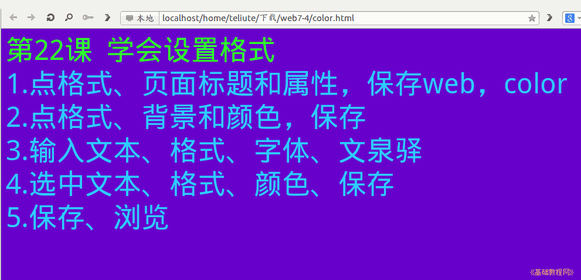

2011-2012 第二学期七年级文字处理和网页教学设计
作者：TeliuTe 来源：基础教程网
二十二、学会设置格式 返回目录 下一课
（一）教学设计
1、学习目标：学会设置格式
2、注意事项：保存到web中，把前面的utf8别忘记了。
3、教学过程：
1）教师准备学案和板书；
2）学生整队进入，开机抄黑板上笔记；
3）教师讲解板书演示操作；
4）学生打指法、日志、完成操作；
5）教师打勾记录学生指法成绩，检查日志和操作；
注：学生抄完笔记就开始打指法、日志，老师讲完后再继续完成；
（二）板书设计(学生笔记)
第22课 学会设置格式
1、点“格式、页面标题和属性”，保存到web，color
2、点 格式、背景和颜色，保存
3、输入文本，格式、字体，文泉驿微米黑
4、选中文本，格式、文本颜色，保存
5、保存，浏览
操作图示：

（三）课后记
下午四节课，上完感觉累的
晚上还有2个小时的晚自习
--
要求整队进入，先进来的都让出去
这阵有些浮躁，需要严格收收心
--
进来开机先要求一下纪律，先学习把心思放在学习上
浮躁了就要收拾，撞枪口上的会被狠批一顿
--
italc 还是有漏洞，只能控制当前在线的
后登录的就不能控制，下回试试2.0的应该有所改进
--
讲解得一直注意学生的思维，跑毛了得赶紧收一收
等讲完了再抓就来不及，顺便检查一下吃零食的
--
4班动作快做的简洁漂亮，这个年级真是有些奇怪
原来以为1、2班稳，结果现在倒过来了，时间真是一把**刀
--
盯着几个差的，降低一下难度，少写几条把页面属性设好就可以了
其他的学生让互相指导，绕过弯来作为学习的主线
--
打了红线的就是要绕弯的，重点的和容易出错的地方
做到这个地方的时候要特别小心，别一根筋不拐弯
--
绕过弯来就很简单，既不要跳也不要漏
一步一步，二楼到三楼再到四楼，直接跳不上来
--
返回目录 下一课
本教程由86团学校TeliuTe制作|著作权所有
基础教程网：http://teliute.org/
美丽的校园……
转载和引用本站内容，请保留作者和本站链接。